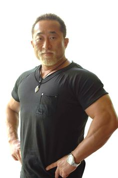
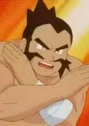

Nobuaki Kakuda is a retired karateka and kickboxer.
- Gender: Male
- Birthday: April 11, 1961
| |
Nobuaki Kakuda is a retired karateka and kickboxer.
|
 |
|---|
|  | Chuck | Pokemon | Chuck is the gym leader of Clanwood City's Gym. He speicalizes in Fighting Type Pokemon. He is positive-minded and emotional and has a tendency to break out into tears if happy. His battle technique is to battle with his Pokemon to improve their concentration. |